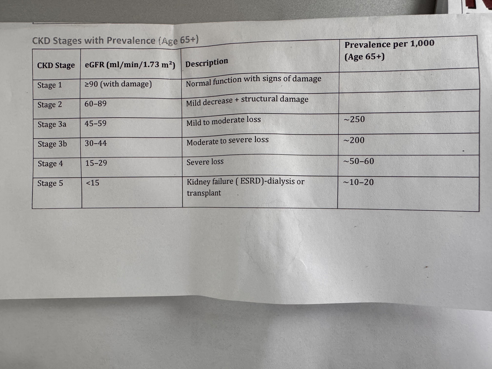

Kidney Care Plan

KDIGO Risk Heat Map (Patient Cell Arrow)
| UACR ↓ / GFR → | ≥ 90 | 60–89 | 45–59 | 30–44 | 15–29 | <15 |
|---|
| < 30 (A1) | G1A1 | G2A1 | G3aA1 | G3bA1 | G4A1 | G5A1 |
|---|
| 30–300 (A2) | G1A2 | G2A2 | G3aA2 | G3bA2 | G4A2 | G5A2 |
|---|
| > 300 (A3) | G1A3 | G2A3 | G3aA3 | G3bA3 | G4A3 | G5A3 |
|---|
Follow-up Plan
Continue kidney protective medications